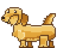
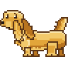

ON THE DESKTOP
Bottom-right by default, draggable. Clicks pass through everywhere except on the dog.
REACTIONS
CLICK = PET
Eyes close, hearts pop, nudge dismissed.
Eyes close, hearts pop, nudge dismissed.

CLAUDE CODE DONE
Head lifts, ears flare, soft "woof" bubble fades after 5 s.
Head lifts, ears flare, soft "woof" bubble fades after 5 s.

WAITING FOR YOU
Head tilt with a "?" that stays until you click or answer.
Head tilt with a "?" that stays until you click or answer.
FULLSCREEN VIDEO
Walder curls up at 32 px with no numbers. He wakes only for a threshold bark (80%, then every 5%). Petting him sends him back to sleep.
Walder curls up at 32 px with no numbers. He wakes only for a threshold bark (80%, then every 5%). Petting him sends him back to sleep.